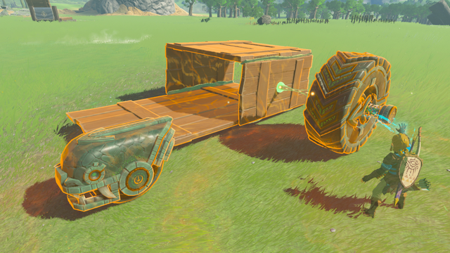

图：重建好的沃托里村——村民回来开庆典，旅馆、料理店、宝箱店从此免费。
先说结论：先备料，再修房
本任务接在「横暴之徒盘踞的村子」后面。怪物清干净了，村子还是废墟，建筑师樱达要亲手把村子修回来。先备齐 15 根圆木与 20 个海拉鲁米交给樱达，再按他的指引修好 5 栋建筑：旅馆、料理店、宝箱店三间店铺，加上村长家、亚梅司家两间民房。5 栋全部修好，村民回来举行庆典，任务完成。
| 阶段 | 要做的事 |
|---|---|
| 备料 | 15 根圆木、20 个海拉鲁米，交给樱达 |
| 修旅馆 | 从上方进内部，用究极手取出水中木板与水底两根小圆木 |
| 修四栋 | 料理店、宝箱店、村长家、亚梅司家，各砍一棵笔直椰子树当支柱 |
| 收尾 | 5 栋全修好，村民回来开庆典；三间店免费，亚梅司家附近的宝箱别漏 |

图：先把怪物清干净——没做完「横暴之徒盘踞的村子」，樱达不会跟你谈重建。
接取与奖励
| 项目 | 内容 |
|---|---|
| 接取 | 完成「横暴之徒盘踞的村子」后，在村里找樱达接任务 |
| 前置 | 横暴之徒盘踞的村子 |
| 奖励 | 沃托里村恢复原样，旅馆、料理店、宝箱店免费使用 |
| 另有 | 亚梅司给 50 卢比修房奖励；他家附近还有个宝箱，里面是 5 卢比和几件武器 |
材料准备
| 材料 | 数量 | 怎么弄 |
|---|---|---|
| 圆木 | 15 根 | 去希富米米神庙旁边的小树林砍，当心藏在树里的树妖；村里也能找到几根；圆木可以分批交给樱达，不用一次搬完 |
| 海拉鲁米 | 20 个 | 哈特诺村杂货店买，12 卢比一个，每次上架 5 个；割草也有机会获得 |
砍树有个讲究：树木倒下后不要再攻击，否则圆木会变成木材，无法用于重建。
五栋建筑总览
| 建筑 | 修法一句话 |
|---|---|
| 旅馆（船型建筑） | 从上方进入内部，用究极手取出水中的木板与沉在水底的两根小圆木 |
| 料理店 | 移开店里的箱子，砍一棵笔直椰子树，圆木穿过屋顶圆孔、再从地板孔洞穿下去插进底座 |
| 宝箱店 | 砍一棵笔直椰子树搬到二楼，从二楼开口放进屋顶圆孔，再插进二楼花盆 |
| 村长家 | 砍一棵笔直椰子树，圆木穿过屋顶开口插入地板底座；修之前先用究极手移开屋顶开口上的箱子 |
| 亚梅司家 | 与村长家同样做法：笔直椰子树圆木穿过屋顶开口，插入地板底座 |
第一步：修旅馆
先修旅馆。村子里的船型建筑就是旅馆。从旅馆上方进入内部，用究极手将水中的木板和沉在水底的两根小圆木全部取出，放到建筑外面。清理完毕后，樱达就会修复旅馆。

图：究极手是修房子的主力——移箱子、搬圆木、清杂物全靠它。
第二步：修料理店
先用究极手移开店铺里的箱子，腾出操作空间。砍倒旁边一棵比较笔直的椰子树，取得圆木。用究极手拿起圆木，调整角度后将前端穿过屋顶的圆孔，再从地板上的孔洞穿下去，插进地板上的底座，料理店就修好了。
第三步：修宝箱店
砍倒一棵笔直的椰子树，将圆木搬到建筑二楼。从二楼的开口将圆木放入屋顶的圆孔，再插进二楼的花盆中，就能完成修复。
第四步：修村长家与亚梅司家
剩下的两处是村长家和亚梅司家。两间房屋都需要将笔直的椰子树圆木穿过屋顶的开口，插入地板上的底座。修村长家前，记得先用究极手移开屋顶开口上的箱子。
关键信息表
| 项目 | 内容 |
|---|---|
| 前置 | 完成「横暴之徒盘踞的村子」 |
| 材料 | 圆木 ×15、海拉鲁米 ×20（可分批交给樱达） |
| 五栋建筑 | 旅馆、料理店、宝箱店、村长家、亚梅司家 |
| 修房关键 | 旅馆清杂物；其余四栋各砍一棵笔直椰子树当支柱，插进底座或花盆 |
| 完成奖励 | 村民回来开庆典；旅馆、料理店、宝箱店免费使用；亚梅司给 50 卢比，他家附近宝箱有 5 卢比和武器 |
容易翻车的地方
- 树倒后又补一刀——圆木会变成木材，没法交差，砍倒就收手。
- 椰子树挑弯的——插不进屋顶的圆孔，专挑笔直的那棵砍。
- 一次搬 15 根圆木——不用，圆木可以分批交给樱达。
- 海拉鲁米一次买不够——哈特诺村杂货店每次只上架 5 个，不够就割草补。
- 修村长家忘了移箱子——屋顶开口上的箱子不移开，圆木插不下去。
- 亚梅司家的宝箱别漏——修好他家后，他给 50 卢比；他家附近还有个宝箱，里面是 5 卢比和几件武器。
一句话总结
备齐 15 根圆木与 20 个海拉鲁米交给樱达，旅馆清杂物，其余四栋各砍一棵笔直椰子树当支柱——5 栋修好，村民回来开庆典，三间店从此免费。